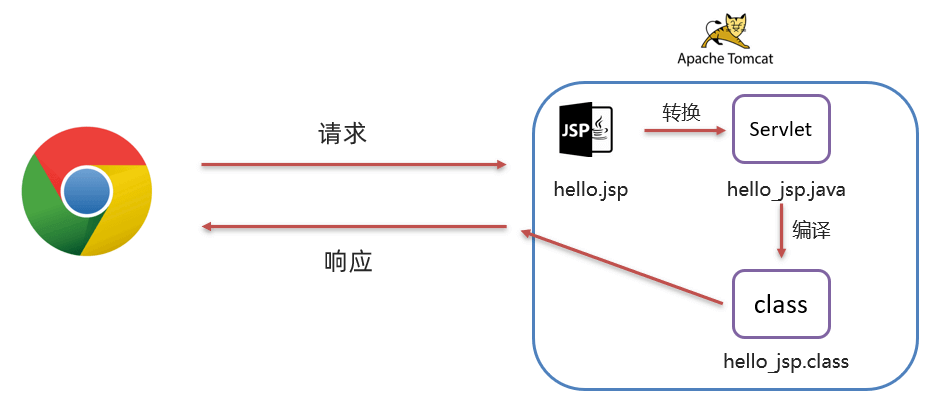
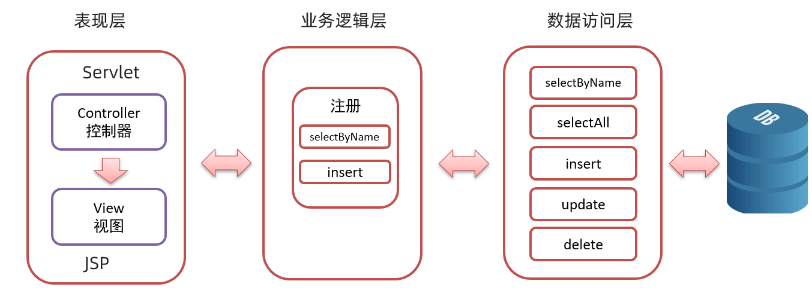

JSP
JSP
今日目标：
- 理解 JSP 及 JSP 原理
- 能在 JSP中使用
EL表达式和JSTL标签- 理解
MVC模式和三层架构- 能完成品牌数据的增删改查功能
1. JSP 概述
**JSP（全称：Java Server Pages）：Java 服务端页面。**是一种动态的网页技术，其中既可以定义 HTML、JS、CSS等静态内容，还可以定义 Java代码的动态内容，也就是 JSP = HTML + Java。如下就是jsp代码
1 | <html> |
上面代码 h1 标签内容是展示在页面上，而 Java 的输出语句是输出在 idea 的控制台。但是因为各种各样的原因，System.out.println("hello,jsp~");在我的电脑上不能在控制台输出，大概率是因为tomcat和jdk版本不匹配的原因。
那么，JSP 能做什么呢？现在我们只用 servlet 实现往网页输出内容的功能，我们看看它里面的内容：
1 | writer.write("\r\n"); |
上面的代码有大量使用到 writer 对象向页面写标签内容，这样我们的代码就显得很麻烦；将来如果展示的效果出现了问题，排错也显得有点力不从心。而 JSP 是如何解决这个问题的呢？
在JSP中里面基本都是 HTML 标签，而动态数据使用 Java 代码进行展示；这样操作看起来要比用 servlet 实现要舒服很多。
JSP 作用：简化开发，避免了在Servlet中直接输出HTML标签。
2. JSP 快速入门
接下来我们做一个简单的快速入门代码。
2.1 搭建环境
创建一个maven的 web 项目，项目结构如下：
1 | jsp-demo |
pom.xml 文件内容如下：
1 |
|
2.2 导入 JSP 依赖
在 dependencies 标签中导入 JSP 的依赖，如下
1 | <dependency> |
该依赖的 scope 必须设置为 provided，因为 tomcat 中有这个jar包了，所以在打包时我们是不希望将该依赖打进到我们工程的war包中。
2.3 创建 jsp 页面
在项目的 webapp 下创建jsp页面
通过上面方式创建一个名为 hello.jsp 的页面。
2.4 编写代码
在 hello.jsp 页面中书写 HTML 标签和 Java 代码，如下
1 | <%@ page contentType="text/html;charset=UTF-8" language="java" %> |
2.5 测试
启动服务器并在浏览器地址栏输入 http=//localhost=8080/jsp-demo/hello.jsp，我们可以在页面上看到如下内容
1 | hello jsp |
同时也可以看到在 idea 的控制台看到输出的 hello,jsp~ 内容。
3. JSP 原理
我们之前说 JSP 就是一个页面，那么在 JSP 中写 html 标签，我们能理解，但是为什么还可以写 Java 代码呢？
因为 **JSP 本质上就是一个 Servlet。**接下来我们聊聊访问jsp时的流程

- 浏览器第一次访问
hello.jsp页面 tomcat会将hello.jsp转换为名为hello_jsp.java的一个Servlettomcat再将转换的servlet编译成字节码文件hello_jsp.classtomcat会执行该字节码文件，向外提供服务
我们可以到项目所在磁盘目录下找 target\tomcat\work\Tomcat\localhost\jsp-demo\org\apache\jsp 目录，而这个目录下就能看到转换后的 servlet
1 | hello_jsp.class CLASS文件 4kb |
通过查看hello_jsp.java代码得知， hello_jsp 这个类就间接的继承了 HttpServlet ，也就说明 hello_jsp 是一个 servlet。
继续阅读 hello_jsp 类的代码，可以看到有一个名为 _jspService() 的方法，该方法就是每次访问 jsp 时自动执行的方法，和 servlet 中的 service 方法一样 。
而在 _jspService() 方法中可以看到往浏览器写标签的代码：
1 | out.write ("\r\n"); |
以前我们自己写 servlet 时，这部分代码是由我们自己来写，现在有了 jsp 后，由tomcat完成这部分功能，自己只需要写html即可。
4. JSP 脚本
JSP脚本用于在 JSP页面内定义 Java代码。在之前的入门案例中我们就在 JSP 页面定义的 Java 代码就是 JSP 脚本。
4.1 JSP 脚本分类
JSP 脚本有如下三个分类：
- <%…%>：内容会直接放到_jspService()方法之中
- <%=…%>：内容会放到out.print()中，作为out.print()的参数
- <%!…%>：内容会放到_jspService()方法之外，被类直接包含
代码演示：
在 hello.jsp 中书写
1 | <% |
通过浏览器访问 hello.jsp 后，查看转换的 hello_jsp.java 文件，i 变量定义在了 _jspService() 方法中
1 | System.out.println("hello,jsp~"); |
在 hello.jsp 中书写
1 | <%="hello"%> |
通过浏览器访问 hello.jsp 后，查看转换的 hello_jsp.java 文件，该脚本的内容被放在了 out.print() 中，作为参数
1 | out.print("hello"); |
在 hello.jsp 中书写
1 | <%! |
通过浏览器访问 hello.jsp 后，查看转换的 hello_jsp.java 文件，该脚本的内容被放在了成员位置
1 | public final class hello_jsp extends org.apache.jasper.runtime.HttpJspBase |
4.2 JSP 缺点
JSP 也有很多缺点。
由于 JSP页面内，既可以定义 HTML 标签，又可以定义 Java代码，造成了以下问题：
-
书写麻烦：特别是复杂的页面
既要写 HTML 标签，还要写 Java 代码
-
阅读麻烦
当代码很多的时候你后期再看这段代码时还需要花费很长的时间去梳理
-
复杂度高：运行需要依赖于各种环境，JRE，JSP容器，JavaEE…
-
占内存和磁盘：JSP会自动生成.java和.class文件占磁盘，运行的是.class文件占内存
-
调试困难：出错后，需要找到自动生成的.java文件进行调试
-
不利于团队协作：前端人员不会 Java，后端人员不精 HTML
如果页面布局发生变化，前端工程师对静态页面进行修改，然后再交给后端工程师，由后端工程师再将该页面改为 JSP 页面
由于上述的问题， **JSP 已逐渐退出历史舞台，**以后开发更多的是使用 HTML + Ajax 来替代。Ajax 是我们后续会重点学习的技术。有个这个技术后，前端工程师负责前端页面开发，而后端工程师只负责前端代码开发。下来对技术的发展进行简单的说明
graph LR
A(Servlet) --> B(JSP)
B --> C(Servlet+JSP)
C --> D(Servlet+JSP+ajax)-
第一阶段：使用
servlet即实现逻辑代码编写，也对页面进行拼接。这种模式我们之前也接触过 -
第二阶段：随着技术的发展，出现了
JSP，人们发现JSP使用起来比Servlet方便很多，但是还是要在JSP中嵌套Java代码，也不利于后期的维护 -
第三阶段：使用
Servlet进行逻辑代码开发，而使用JSP进行数据展示graph LR A(不要直接在JSP里写Java代码) --> B(Servlet 逻辑处理-封装数据) A --> C(JSP 获取数据-便利展现数据) -
第四阶段：使用
servlet进行后端逻辑代码开发，而使用HTML进行数据展示。而这里面就存在问题，HTML是静态页面，怎么进行动态数据展示呢？这就是ajax的作用了。
那既然 JSP 已经逐渐的退出历史舞台，那我们为什么还要学习 JSP 呢？原因有两点：
- 一些公司可能有些老项目还在用
JSP，所以要求我们必须了解JSP - 我们如果不经历这些复杂的过程，就不能体现后面阶段开发的简单
接下来我们来学习第三阶段，使用 EL表达式 和 JSTL 标签库替换 JSP 中的 Java 代码。
5. EL 表达式
在jsp中可能会发现EL表达式不起作用的情况，此时需要在jsp中添加以下代码放在页面开头：
1 | <%@page isELIgnored="false" %> |
5.1 概述
EL（全称Expression Language ）表达式语言，用于简化 JSP 页面内的 Java 代码。
EL 表达式的主要作用是 获取数据。其实就是从域对象中获取数据，然后将数据展示在页面上。
而 EL 表达式的语法也比较简单， ${expression} 。例如：${brands} 就是获取域中存储的 key 为 brands 的数据。
5.2 代码演示
-
定义servlet，在 servlet 中封装一些数据并存储到 request 域对象中并转发到
el-demo.jsp页面。1
2
3
4
5
6
7
8
9
10
11
12
13
14
15
16
17
18
19
20
21
22
public class ServletDemo1 extends HttpServlet {
protected void doGet(HttpServletRequest request, HttpServletResponse response) throws ServletException, IOException {
//1. 准备数据
List<Brand> brands = new ArrayList<Brand>();
brands.add(new Brand(1,"三只松鼠","三只松鼠",100,"三只松鼠，好吃不上火",1));
brands.add(new Brand(2,"优衣库","优衣库",200,"优衣库，服适人生",0));
brands.add(new Brand(3,"小米","小米科技有限公司",1000,"为发烧而生",1));
//2. 存储到request域中
request.setAttribute("brands",brands);
//3. 转发到 el-demo.jsp
request.getRequestDispatcher("/el-demo.jsp").forward(request,response);
}
protected void doPost(HttpServletRequest request, HttpServletResponse response) throws ServletException, IOException {
this.doGet(request, response);
}
}注意： 此处需要用转发，因为转发才可以使用 request 对象作为域对象进行数据共享
-
在
el-demo.jsp中通过 EL表达式 获取数据1
2
3
4
5
6
7
8
9<%@ page contentType="text/html;charset=UTF-8" language="java" %>
<html>
<head>
<title>Title</title>
</head>
<body>
${brands}
</body>
</html> -
在浏览器的地址栏输入
http=//localhost=8080/jsp-demo/demo1，页面效果如下：1
[Brand{"id"=1,"brandName"="三只松鼠","companyName"="三只松鼠","ordered"=100,"description"="三只松鼠，好吃不上火","status"=1,"Brandfid"=2},Brand{"id"=2,"brandName"="优衣库","companyName"="优衣库","ordered"=200,"description"="优衣库，服适人生","status"=0,"Brandfid"=3},Brand{"id"=3,"brandName"="小米","companyName"="小米科技有限公司","ordered"=1000,"description"="为发烧而生","status"=1}]
如果
EL表达式不起作用，可以在el-demo.jsp中添加如下内容：1
<%@page isELIgnored="false" %>
5.3 域对象
JavaWeb中有四大域对象，分别是：
- page：当前页面有效
- request：当前请求有效
- session：当前会话有效
- application：当前应用有效
el 表达式获取数据，会依次从这4个域中寻找，直到找到为止。例如： ${brands}，el 表达式获取数据，会先从page域对象中获取数据，如果没有再到 requet 域对象中获取数据，如果再没有再到 session 域对象中获取，如果还没有才会到 application 中获取数据。
6. JSTL标签
6.1 概述
JSP标准标签库(Jsp Standarded Tag Library) ，使用标签取代JSP页面上的Java代码。如下代码就是JSTL标签
1 | <c=if test="${flag == 1}"> |
上面代码看起来是不是比 JSP 中嵌套 Java 代码看起来舒服好了。而且前端工程师对标签是特别敏感的，他们看到这段代码是能看懂的。
JSTL 提供了很多标签，如下图:
| JSTL 标签 | 描述 |
|---|---|
<c:if> |
条件判断标签，用于执行条件语句 |
<c:choose> |
多路选择标签，类似于 switch 语句 |
<c:forEach> |
迭代循环标签，用于遍历集合或数组 |
<c:set> |
变量赋值标签，用于设置变量的值 |
<c:out> |
输出标签，用于输出变量或表达式的值 |
<c:url> |
URL 标签，用于构建 URL 地址 |
<c:import> |
导入标签，用于导入其他页面或资源 |
<c:redirect> |
重定向标签，用于进行页面重定向 |
<c:param> |
参数标签，用于传递参数到其他页面或资源 |
<c:catch> |
异常捕获标签，用于捕获并处理异常 |
<c:remove> |
移除标签，用于移除指定作用域中的属性 |
我们只对两个最常用的标签进行讲解，<c=forEach> 标签和 <c=if> 标签。
JSTL 使用也是比较简单的，分为如下步骤：
-
导入坐标
1
2
3
4
5
6
7
8
9
10<dependency>
<groupId>jstl</groupId>
<artifactId>jstl</artifactId>
<version>1.2</version>
</dependency>
<dependency>
<groupId>taglibs</groupId>
<artifactId>standard</artifactId>
<version>1.1.2</version>
</dependency> -
在JSP页面上引入JSTL标签库
1
<%@ taglib prefix="c" uri="http=//java.sun.com/jsp/jstl/core" %>
-
使用标签
6.2 if 标签
<c=if>：相当于 if 判断
- 属性：test，用于定义条件表达式
1 | <c=if test="${flag == 1}"> |
代码演示：
-
定义一个
servlet，在该servlet中向 request 域对象中添加 键是status，值为1的数据1
2
3
4
5
6
7
8
9
10
11
12
13
14
15
16
public class ServletDemo2 extends HttpServlet {
protected void doGet(HttpServletRequest request, HttpServletResponse response) throws ServletException, IOException {
//1. 存储数据到request域中
request.setAttribute("status",1);
//2. 转发到 jstl-if.jsp
数据request.getRequestDispatcher("/jstl-if.jsp").forward(request,response);
}
protected void doPost(HttpServletRequest request, HttpServletResponse response) throws ServletException, IOException {
this.doGet(request, response);
}
} -
定义
jstl-if.jsp页面，在该页面使用<c=if>标签1
2
3
4
5
6
7
8
9
10
11
12
13
14
15
16
17
18
19
20<%@ page contentType="text/html;charset=UTF-8" language="java" %>
<%@ taglib prefix="c" uri="http=//java.sun.com/jsp/jstl/core" %>
<% isELIgnored="false" %>
<html>
<head>
<title>Title</title>
</head>
<body>
<%--
c=if：来完成逻辑判断，替换java if else
--%>
<c=if test="${status == 1}">
启用
</c=if>
<c=if test="${status == 0}">
禁用
</c=if>
</body>
</html>注意： 在该页面已经要引入 JSTL核心标签库
<%@ taglib prefix="c" uri="http=//java.sun.com/jsp/jstl/core" %>
6.3 forEach 标签
<c=forEach>：相当于 for 循环。java中有增强for循环和普通for循环，JSTL 中的 <c=forEach> 也有两种用法
6.3.1 用法一
类似于 Java 中的增强for循环。涉及到的 <c=forEach> 中的属性如下
-
items：被遍历的容器
-
var：遍历产生的临时变量
-
varStatus：遍历状态对象
如下代码，是从域对象中获取名为 brands 数据，该数据是一个集合；遍历遍历，并给该集合中的每一个元素起名为 brand，是 Brand对象。在循环里面使用 EL表达式获取每一个Brand对象的属性值
1 | <c=forEach items="${brands}" var="brand"> |
代码演示：
-
servlet还是使用之前的名为ServletDemo1。 -
定义名为
jstl-foreach.jsp页面，内容如下：1
2
3
4
5
6
7
8
9
10
11
12
13
14
15
16
17
18
19
20
21
22
23
24
25
26
27
28
29
30
31
32
33
34
35
36
37
38
39
40
41
42
43
44<%@ page contentType="text/html;charset=UTF-8" language="java" %>
<%@ taglib prefix="c" uri="http=//java.sun.com/jsp/jstl/core" %>
<% isELIgnored="false" %>
<!DOCTYPE html>
<html lang="en">
<head>
<meta charset="UTF-8">
<title>Title</title>
</head>
<body>
<input type="button" value="新增"><br>
<hr>
<table border="1" cellspacing="0" width="800">
<tr>
<th>序号</th>
<th>品牌名称</th>
<th>企业名称</th>
<th>排序</th>
<th>品牌介绍</th>
<th>状态</th>
<th>操作</th>
</tr>
<c=forEach items="${brands}" var="brand" varStatus="status">
<tr align="center">
<%--<td>${brand.id}</td>--%>
<td>${status.count}</td>
<td>${brand.brandName}</td>
<td>${brand.companyName}</td>
<td>${brand.ordered}</td>
<td>${brand.description}</td>
<c=if test="${brand.status == 1}">
<td>启用</td>
</c=if>
<c=if test="${brand.status != 1}">
<td>禁用</td>
</c=if>
<td><a href="#">修改</a> <a href="#">删除</a></td>
</tr>
</c=forEach>
</table>
</body>
</html>
6.3.2 用法二
类似于 Java 中的普通for循环。涉及到的 <c=forEach> 中的属性如下
-
begin：开始数
-
end：结束数
-
step：步长
实例代码：
从0循环到10，变量名是 i ，每次自增1
1 | <c=forEach begin="0" end="10" step="1" var="i"> |
7. MVC模式和三层架构
MVC 模式和三层架构是一些理论的知识，将来我们使用了它们进行代码开发会让我们代码维护性和扩展性更好。
7.1 MVC模式
MVC 是一种分层开发的模式，其中：
-
M：Model，业务模型，处理业务
-
V：View，视图，界面展示
-
C：Controller，控制器，处理请求，调用模型和视图
控制器（serlvlet）用来接收浏览器发送过来的请求，控制器调用模型（JavaBean）来获取数据，比如从数据库查询数据；控制器获取到数据后再交由视图（JSP）进行数据展示。
MVC 好处：
-
职责单一，互不影响。每个角色做它自己的事，各司其职。
-
有利于分工协作。
-
有利于组件重用
7.2 三层架构
三层架构是将我们的项目分成了三个层面，分别是 表现层、业务逻辑层、数据访问层。

- 数据访问层：对数据库的CRUD基本操作
- 业务逻辑层：对业务逻辑进行封装，组合数据访问层层中基本功能，形成复杂的业务逻辑功能。例如
注册业务功能，我们会先调用数据访问层的selectByName()方法判断该用户名是否存在，如果不存在再调用数据访问层的insert()方法进行数据的添加操作 - 表现层：接收请求，封装数据，调用业务逻辑层，响应数据
而整个流程是，浏览器发送请求，表现层的Servlet接收请求并调用业务逻辑层的方法进行业务逻辑处理，而业务逻辑层方法调用数据访问层方法进行数据的操作，依次返回到serlvet，然后servlet将数据交由 JSP 进行展示。
三层架构的每一层都有特有的包名称：
- 表现层：
com.itheima.controller或者com.itheima.web - 业务逻辑层：
com.itheima.service - 数据访问层：
com.itheima.dao或者com.itheima.mapper